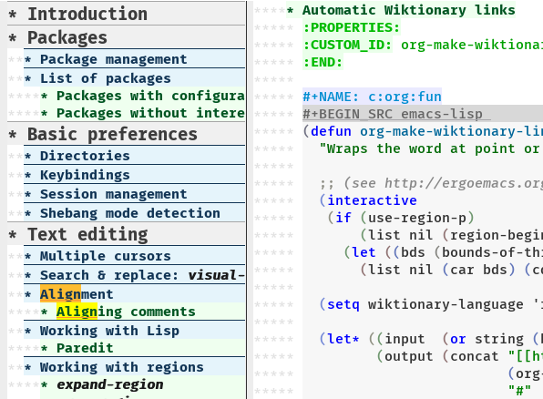

My Emacs Configuration
Table of Contents
1 Introduction
Welcome to my Emacs configuration. It is written in the style of literate programming, which means, in this case, that it’s written in Org-mode. Perhaps unlike other Emacs configurations written in Org, however, it is written in a non-linear fashion. That means that source code is presented in a way that’s suitable for the documenting of code, and not the running of code. If you copied all source blocks in this document and put them in the same order in an Emacs configuration file, it might not work.
1.1 “Best of”
My Emacs configuration is very long. I understand if nobody will ever read it all, but I do think there are parts of it worth reading. Following is a list of quick links to the most interesting sections of this document.
- org-tree-view
- A sidebar for conveniently browsing all the headings in an Org document. The resulting package is as interesting, I would say, as some of the underlying code.
2 Packages
2.1 Package management
First and foremost, I define what sources to install packages from:
(require 'package) (setq package-archives '(("gnu" . "http://elpa.gnu.org/packages/") ("org" . "http://orgmode.org/elpa/") ("melpa" . "http://melpa.org/packages/") ("melpa-stable" . "http://stable.melpa.org/packages/"))) (setq package-archive-priorities '(("melpa-stable" . 1))) (package-initialize)
I call package-initialize here, because I want all installed packages to be
loaded automatically with their default configuration, except the ones I
explicitly configure with use-package.
For that I initialize use-package:
(eval-when-compile (require 'use-package)) (require 'diminish) ; if you use :diminish (require 'bind-key) ; if you use any :bind variant
2.2 List of packages
As I’ve said, this document is presented in a non-linear way. Under this rubric, I list all the packages that I have installed and that I use. However, their respective configurations are listed elsewhere.
Packages with configuration elsewhere
Packages without interesting configuration
In order to do their job, some packages have to be explicitly enabled in the Emacs configuration, but do not need to be further configured. For that reason, I probably won’t mention these packages elsewhere, and instead just list them here with a short description of why I like them.
- rainbow-delimiters
- Paints matching parentheses with the same color.
- ace-link
- Nice little extension to avy that does the same thing, but for links in help buffers.
- nlinum
- Line numbers, but faster than
linum. I don’t use this much, but it’s nice to have when you need it. - popwin
- Makes popup windows so much easier to work with - this is a must-have.
- helm-org-rifle
- Makes it a bit easier to browse through Org documents - not perfect though.
- buffer-move
- Lets me switch buffers between two windows - pretty handy.
3 Basic preferences
In my configuration, there are some basic settings that don’t really belong under any section in this documentation. Most of them are set using the Customize interface, but here are the ones that aren’t:
(server-start) ; use emacs as a server (electric-pair-mode 1) ; auto-insert matching pairs (menu-bar-mode -1) ; disable menu bar (tool-bar-mode -1) ; disable gui toolbar (save-place-mode 1) ; save cursor position (xterm-mouse-mode t) ; use mouse (somewhat effectively) in terminal ;; Activate auto-fill-mode for all text buffers (add-hook 'text-mode-hook 'turn-on-auto-fill)
3.1 Directories
Per default, Emacs insists on making a mess inside ~/.emacs.d. These settings
prevent that.
(setq custom-file (concat user-emacs-directory "custom.el")) (setq emacs-state-directory (expand-file-name "state/" user-emacs-directory)) (defun state-dir (file) (concat emacs-state-directory file)) ;; - Various places (setq auto-save-list-file-prefix (state-dir "auto-save-list/.saves~")) (setq save-place-file (state-dir "save-place")) (setq recentf-save-file (state-dir "recentf")) (setq ido-save-directory-list-file (state-dir "ido.last")) (setq eshell-directory-name (state-dir "eshell")) (setq backup-directory-alist `((".*" . ,(state-dir "saves")))) ;; - Tramp (setq tramp-backup-directory-alist backup-directory-alist) (setq tramp-auto-save-directory (state-dir "tramp/auto-save/")) (setq tramp-persistency-file-name (state-dir "tramp/persistency.el")) ;; - Projectile (setq projectile-cache-file (concat emacs-state-directory "projectile/cache.el")) (setq projectile-known-projects-file (concat emacs-state-directory "projectile/known-projects.el")) ;; - File for activated disabled commands (defadvice en/disable-command (around put-in-custom-file activate) "Put declarations in `custom-file'." (let ((user-init-file (concat user-emacs-directory ".commands"))) ad-do-it)) (load-file (concat user-emacs-directory ".commands"))
3.2 Keybindings
Here are a couple of keybindings that don’t really fit in under any other headline. Most of them are based on built-in functions.
(global-set-key (kbd "M-<f1>") 'menu-bar-mode) (global-set-key (kbd "M-]") 'other-window) (global-set-key (kbd "M-[") (lambda (n) (interactive "p") (other-window (* -1 n)))) (global-set-key (kbd "M-n") (lambda (n) (interactive "p") (scroll-up n))) (global-set-key (kbd "M-p") (lambda (n) (interactive "p") (scroll-down n))) (global-set-key (kbd "<C-tab>") #'completion-at-point)
Apart from defining new ones, there are some keybindings that I remove. One
problematic keybinding is C-z. It suspends Emacs - useful in terminals, annoying
in the graphical version of Emacs. The following code disables that keybinding
for GUI Emacs, but keeps it for emacs -nw and emacsclient -t.
(defun suspend-frame-unless-gui (oldfun &rest r) (unless (display-graphic-p) (apply oldfun r))) (advice-add #'suspend-frame :around #'suspend-frame-unless-gui)
It’s not strictly a keybinding, but I still felt it belonged in this section.
3.3 Helper functions
Here is a collection of useful helper functions that I use in my Emacs configuration.
(defun delete-and-extract-comment (&optional bol-arg) "Delete and return the comment at the end of the line. If there is no comment, return nil." (let (comment) (save-excursion (move-beginning-of-line (or bol-arg 1)) (when (skip-syntax-forward "^<" (point-at-eol)) (setq comment (delete-and-extract-region (point) (point-at-eol))) (delete-horizontal-space))) (if (s-blank-str? comment) nil comment)))
3.4 Session management
If there is a way to save the current window configuration to a file, and I mean only the window configuration (and, of course, the buffers that are open in those windows), please tell me.
For the moment, I use desktop-save-mode, but I’m unhappy. It saves far too many
irrelevant things, like the theme I’m using and all buffers. I only want to
save the currently visible buffers and the positions of their windows. That’s
it.
In the meantime, this is my configuration for desktop-save-mode.
(setq desktop-dirname (concat emacs-state-directory "desktop/") desktop-base-file-name "emacs.desktop" desktop-base-lock-name "lock" desktop-path (list desktop-dirname) desktop-save t)
Furthrmore, I have a custom function that lets me easily activate the mode:
(defun init-desktop (&optional arg) "Load the desktop (if C-u is provided) and enable autosaving." (interactive "p") (if current-prefix-arg (desktop-read)) (desktop-save-mode 1) (message "Desktop-Save mode enabled")) (global-set-key (kbd "C-c D") 'init-desktop)
3.5 Shebang mode detection
;; Shebang mode detection (add-to-list 'interpreter-mode-alist '("python3" . python-mode))
4 Text editing
4.1 Multiple cursors
multiple-cursors is another indispensible part of my Emacs toolchain. This is
mostly a configuration of keys, but I also add iy-go-to-char-start-pos to the
mc/cursor-specific-vars list. This was recommended to me. The cursor specific
variables are, according to the multiple-cursors source, “a list of vars that
need to be tracked on a per-cursor basis.”
(use-package multiple-cursors :bind (("C-c c" . mc/edit-lines) ("C-c >" . mc/mark-next-like-this) ("C-c <" . mc/mark-previous-like-this) ("C-c ?" . mc/mark-all-like-this)) :config (add-to-list 'mc/cursor-specific-vars 'iy-go-to-char-start-pos))
For a good and easy-to-reproduce example of how powerful multiple-cursors
really is, go to the buffer list (M-x list-buffers). Let’s say you have
multiple Magit buffers open that you want to kill.
Search your way to the first Magit buffer, highlight the *magit- prefix,
and run mc/mark-all-like-this. Now you have a cursor on every Magit
buffer in the list. Now you can type k to mark every buffer with a cursor
on it for deletion. After disabling your multiple cursors with C-g, you
can finally press x to make the buffer menu execute your instructions and
delete all Magit buffers.
Of course, this particular task is more easily done using a function like
kill-matching-buffers or even the Helm buffers list, but the routine
described above clearly illustrates the power of having multiple cursors.
4.2 Search & replace: visual-regexp
visual-regexp is certainly worth a spot on the “interesting” packages list, not only because its configuration is special, but because it is just so good. Not only does it provide an incremental regex replace function - that means live preview (!) - but the extension visual-regexp-steroids lets you search and replace using PCRE instead of Emacs syntax (!).
To get this working with use-package, I first configure the plain old
visual-regexp package, but tell use-package to defer its loading - you see, for
visual-regexp-steroids to work, it seems as though it needs to load
visual-regexp itself. If you load it beforehand, it won’t work.
Because use-package enables lazy-loading of packages when their configuration
includes a :bind option, we have to explicitly tell it to load
visual-regexp-steroids immediately, regardless of the :bind-clause. This, again,
so that visual-regexp won’t load before its muscly brother.
(use-package visual-regexp :defer) ; prevent loading this package before visual-regexp-steroids! (use-package visual-regexp-steroids :ensure pcre2el ; much faster than Python :demand ; load this package immediately, regardless of :bind :bind (("C-c r" . vr/replace) ("C-c q" . vr/query-replace) ("C-c m" . vr/mc-mark) ("C-M-r" . vr/isearch-backward) ("C-M-s" . vr/isearch-forward)) :config (setq vr/engine 'pcre2el))
I got this solution from a workaround posted by GitHub user alamaison. Thank you!
To enable PCRE style regex, instead of the default Python style, I configure the package to use pcre2el as its engine.
An interesting function provided by visual-regexp is vr/mc-mark. This
function integrates with the multiple-cursors package to add a cursor to
every match to a regex search. Useful!
4.3 Alignment
Aligning comments
What follows is a function written by the user phils at StackOverflow. It is a language-agnostic method of aligning comments. How useful!
(defun align-comments-in-region (beginning end) "Align comments within marked region." (interactive "*r") (let (indent-tabs-mode align-to-tab-stop) (align-regexp beginning end (concat "\\(\\s-*\\)" (regexp-quote comment-start))))) (global-set-key (kbd "C-c M-a") #'align-comments-in-region)
4.4 Working with Lisp
Paredit
Paredit is a totally indispensible tool for editing Lisp code. It changes the way you write Lisp, by replacing many built-in editing commands as well as providing its own set of functions, for creating, re-arranging, splitting, convoluting and deleting s-expressions.
My only problem with Paredit is that it replaces M-r. I frequently use M-r to
quickly move the cursor around the screen, but Paredit overrides that keybinding
with paredit-raise-sexp. To fix this, as you can see below, I have created a new
keybinding, M-R, and put it inside a use-package :bind-clause. This way, as long
as I have Paredit installed, use-package binds M-R to the original function of
M-r.
(use-package paredit :init (autoload 'enable-paredit-mode "paredit" "Turn on pseudo-structural editing of Lisp code." t) (add-hook 'emacs-lisp-mode-hook #'enable-paredit-mode) (add-hook 'eval-expression-minibuffer-setup-hook #'enable-paredit-mode) (add-hook 'ielm-mode-hook #'enable-paredit-mode) (add-hook 'lisp-mode-hook #'enable-paredit-mode) (add-hook 'lisp-interaction-mode-hook #'enable-paredit-mode) (add-hook 'scheme-mode-hook #'enable-paredit-mode) :config (defun paredit-delete-indentation (&optional arg) "Handle joining lines that end in a comment." (interactive "*P") (let ((comment (delete-and-extract-comment (if arg 1 0)))) (delete-indentation arg) (when comment (save-excursion (move-end-of-line 1) (insert " ") (insert comment))))) (defun paredit-newline-keep-comment (&optional arg) "Insert newline, but keep any potential comment on the current line." (interactive "*P") (let ((comment (delete-and-extract-comment))) (paredit-newline) (when comment (save-excursion (forward-line -1) (move-end-of-line 1) (insert " ") (insert comment))))) (global-set-key [remap paredit-newline] #'paredit-newline-keep-comment) ;; Disable comment column (add-hook 'paredit-mode-hook (lambda () (setq-local comment-column 0))) ;; Disable keybindings already used (define-key paredit-mode-map (kbd "M-q") nil) :bind (("M-R" . move-to-window-line-top-bottom) ("M-^" . paredit-delete-indentation) ("M-Q" . paredit-reindent-defun)))
4.5 Working with regions
expand-region
I spend a lot of space setting up the shortcuts for expand-region, because
it is very useful. The functions speak for themselves. I use many of them, as
I find er/expand-region to work somewhat poorly with Emacs Lisp - perhaps
Paredit interferes with it.
In my configuration, I use C-' as a prefix for all expand-region
keybindings, and Shift as a modifier to mark outside instead of inside the
region.
(use-package expand-region :bind (("C-' r" . er/expand-region) ("C-' w" . er/mark-word) ("C-' '" . er/mark-inside-quotes) ("C-' \"" . er/mark-outside-quotes) ("C-' p" . er/mark-inside-pairs) ("C-' P" . er/mark-outside-pairs) ("C-' c" . er/mark-comment) ("C-' t" . er/mark-inner-tag) ("C-' T" . er/mark-outer-tag) ("C-' f" . er/mark-defun)))
4.6 Opening line below and above
Every Vim user knows how useful the o and O commands are. smart-open-line and
smart-open-line-above are two functions, borrowed from Emacs Redux, that emulate
this behavior.
(defun smart-open-line () ; (courtesy of Emacs Redux) "Insert an empty line after the current line. Position the cursor at beginning, according to current mode." (interactive) (move-end-of-line nil) (newline-and-indent)) (defun smart-open-line-above () "Insert an empty line above the current line. Position the cursor at beginning, according to current mode." (interactive) (move-beginning-of-line nil) (newline) (if (looking-at "[[:space:]]*$") ; remove indentation from old line (delete-horizontal-space)) (forward-line -1) (indent-according-to-mode))
Personally, I use the following keybindings:
(global-set-key (kbd "M-o") 'smart-open-line) (global-set-key (kbd "M-O") 'smart-open-line-above)
Note, however, that if you use Emacs in a terminal, M-O will not work.
4.7 Commenting lines
What follows is a function by Jason Viers at StackExchange. It makes it a bit easier to comment either the current line or the current region.
(defun comment-dwim-line (&optional arg) ; (courtesy of Jason Viers @ SE) "Replacement for the comment-dwim command. If no region is selected and current line is not blank and we are not at the end of the line, then comment current line. Replaces default behaviour of comment-dwim, when it inserts comment at the end of the line." (interactive "*P") (comment-normalize-vars) (if (and (not (region-active-p)) (not (looking-at "[ \t]*$"))) (comment-or-uncomment-region (line-beginning-position) (line-end-position)) (comment-dwim arg))) (global-set-key (kbd "C-;") 'comment-dwim-line)
5 Movement
5.1 Quickly jumping around
Moving around using C-n, C-p, C-f and C-b is not only tiresome, but
probably quite unergonomical as well. Under this section, I tell you about the
methods I use to quickly jump to any position in the current window.
iy-go-to-char
(use-package iy-go-to-char :bind (("M-m" . iy-go-to-char) ("M-M" . iy-go-to-char-backward) ("C-." . iy-go-to-char-continue) ("C-," . iy-go-to-char-continue-backward)))
iy-go-to-char is a simple tool that provides functionality like Vim’s f
and F. Works well, without any problems.
avy
(use-package avy :commands avy-isearch :init (global-set-key (kbd "M-'") nil) ; reset M-' :config (define-key isearch-mode-map (kbd "M-'") 'avy-isearch) :bind (("C-M-'" . abbrev-prefix-mark) ; re-bind default M-' ("M-' M-'" . avy-goto-line) ("M-' '" . avy-goto-char) ("M-' s" . avy-goto-char-timer) ("M-' w" . avy-goto-word-1)))
avy is the successor to ace-jump-mode. It lets you jump to things visually, but using the keyboa-rd. Smart man who came up with the original idea.
For avy I have dedicated the M-' keybinding. The default function tied
to M-' I have remapped to C-M-'.
5.2 Moving between windows: windmove
For the most part, especially when using Org-mode, I use the normal C-x o to
switch between windows, but sometimes when you have multiple windows open, it’s
easier just to use windmove. It is a package that provides simple directional
movement between windows.
Personally, I use the default keybindings, which make use of Shift in combination with any of the arrow keys.
(use-package windmove :init (windmove-default-keybindings))
5.3 Moving to the beginning and end of a line
(defun smarter-move-beginning-of-line (&optional &rest args) "Move point back to indentation of beginning of line. Move point to the first non-whitespace character on this line. If point is already there, move to the beginning of the line. Effectively toggle between the first non-whitespace character and the beginning of the line. If ARG is not nil or 1, move forward ARG - 1 lines first. If point reaches the beginning or end of the buffer, stop there." (interactive "^p") (let ((arg (or (prefix-numeric-value current-prefix-arg) 1))) ;; Move lines first (when (/= arg 1) (let ((line-move-visual nil)) (forward-line (1- arg)))) (let ((orig-point (point))) (back-to-indentation) (when (= orig-point (point)) (move-to-column 0))))) ; based on function from Emacs Redux (defun smarter-move-end-of-line (&optional &rest args) "Move to the end of the line, but before any potential comment. If already at the pre-comment end of line, move to the actual end of line. If ARG is not nil or 1, move forward ARG - 1 lines first. If point reaches the beginning or end of the buffer, stop there." (interactive "^p") (let ((arg (or (prefix-numeric-value current-prefix-arg) 1))) (when (/= arg 1) (let ((line-move-visual nil)) (forward-line (1- arg)))) (let ((orig-point (point))) (back-to-indentation) (let ((bol-point (point))) (skip-syntax-forward "^<" (point-at-eol)) (if (= bol-point (point)) (move-end-of-line 1) (backward-char) (if (looking-at "\s") (re-search-backward "^\\|[^[:space:]]")) (forward-char) (when (= orig-point (point)) (move-end-of-line 1)))))))
(global-set-key [remap move-beginning-of-line] 'smarter-move-beginning-of-line) (global-set-key [remap move-end-of-line] 'smarter-move-end-of-line)
5.4 Scrolling pleasantly
Sometimes, the mouse is really useful. I love text-based interfaces, but they’re not perfect. Lucky for me, Emacs has good mouse support, at least in the GUI version.
An annoying thing about using the mouse in Emacs, however, is scrolling. It works well most of the time, until you hit the beginning or end of the buffer. BEEP! If you haven’t disabled the bell, you’ll hear the bell. If you have disabled the bell, you’ll see an annoying visual bell. Yes, I know that I’ve enabled the visual bell myself, and I do like it. Just not when I’m scrolling.
The following code surpresses any errors thrown by mwheel-scroll.
(defun silent-mwheel-scroll (oldfun &rest r) (interactive (list last-input-event)) (ignore-errors (call-interactively oldfun))) (advice-add #'mwheel-scroll :around #'silent-mwheel-scroll)
Much better! Funny how one small change can make Emacs feel ten years more modern.
6 Visual aids
6.1 Folding with origami
Origami is a package that provides Vim-like folding. I have been an avid Vim user, so folding is a natural part of my programming life.
The configuration that follows is long. I will therefore stop every now and then, take a pause and explain what I’ve done:
(use-package origami :config (global-origami-mode t) (defun traverse-folds (times &optional beginning) "Traverses through folds as many times as ordered by argument. A negative argument makes it traverse backwards." (if (> times 0) (move-end-of-line nil) (move-beginning-of-line nil)) (let ((fun (if (> times 0) 'origami-forward-fold 'origami-previous-fold)) (beginning (or beginning (point)))) (dotimes (i (abs times)) (condition-case err (funcall fun (current-buffer) (point)) (error (message "Fold not found: %s" err)))) (set-mark beginning) (deactivate-mark))) (defun next-fold (times) "Jumps to the beginning of the next fold (or previous, on negative argument)." (interactive "P") (unless times (setq times 1)) (traverse-folds times)) (defun previous-fold (times) "Jumps to the beginning of the previous fold, as many times as ordered by argument." (interactive "P") (unless times (setq times 1)) (next-fold (* times -1))) (defun goto-fold (number) "Jumps to fold # (provided by argument) in file." (interactive "P") (let ((number (or number (string-to-number (read-string "Jump to fold: ")))) (beginning (point))) (if (equal number 0) (setq number 1)) (if (> number 0) (goto-char (point-min)) (goto-char (point-max))) (traverse-folds number beginning))) ;; Above are listed my own functions for traversing folds. I have functions ;; for going to the next, previous and nth fold, but they're all based on one ;; =traverse-folds= function. The reason I wrote my own function was that the ;; functions built into /origami/ didn't exactly work the way I wanted. They ;; would jump from fold end to fold end when jumping forwards - very annoying. :bind (("M-Z" . custom-origami-toggle-node) ("C-M-z" . origami-toggle-all-nodes) ("C-c C-z" . goto-fold) ("C-c C-n" . next-fold) ("C-c C-p" . previous-fold)))
Finally, some simple keybidnings, including ones for normal Origami functions as well as for the above-defined custom functions.
In summary, it’s a shame that this much configuration is needed to get such a simple feature like folding working, especially when Vim supports it almost perfectly from scratch. Overall, folding just doesn’t seem to work reliably in Emacs outside of Org-mode.
6.2 Highlighting superfluous whitespace
With the following code, I enable highlighting of trailing whitespace in any buffer whose mode descends from prog-mode.
(add-hook 'prog-mode-hook (lambda () (setq-local show-trailing-whitespace t)))
6.3 Dynamic cursor shape
One of the things I struggle with while using Emacs is identifying which window
is currently active. Highlighting the mode line helps, but it’s usually not
enough for me. Previously, I have used hl-line with success, but I found that
the package was quite unoptimized and that it didn’t play nice with some modes.
One of the solutions I have found is setting the cursor shape differently for focused and unfocused windows.
I define the following functions to change the cursor shape to a hollow block when a window becomes unfocused, and back to the default shape (that is, the current cursor type when Emacs ran my configuration) when a window becomes focused.
(defvar default-cursor-shape cursor-type) (defun cursor-focused () (setq-local cursor-type default-cursor-shape)) (defun cursor-unfocused () (setq-local cursor-type 'block))
The above functions are called from a function called cursor-set-focus, which is
added to post-command-hook. It loops through all of the frame’s windows and
calls cursors-focused if the window’s buffer matches the current buffer.
Otherwise it calls cursor-unfocused.
(defun cursor-set-focus () (cl-loop for window in (window-list) do (let ((current-buffer (window-buffer))) (with-current-buffer (window-buffer window) (if (equal (window-buffer window) current-buffer) (cursor-focused) (cursor-unfocused)))))) (add-hook 'post-command-hook 'cursor-set-focus)
This is a pretty nice way of checking the active window. I am usually against
using post-command-hook, because of how often it is run, but there isn’t
anything as reliable. Believe me, I’ve tried.
6.4 Prettify symbols mode
(add-hook 'emacs-lisp-mode-hook #'prettify-symbols-mode)
7 Helpful tools
7.1 Helm
I always feel a bit guilty when I use Helm. Which is, like, all the time, because of how useful it is. I mostly use Helm “as-is.” I do have some code that implements Helm completion from Eshell, which is very useful.
I have used alternatives to Helm, like Ido and Ivy, but I felt that Ido provided
too little, and that Ivy made things surprisingly complicated. Want to close all
Magit buffers? With Helm, you just enter “magit”, hit <C-space> a few times and
then M-D. With Ivy, you’d have to find the first buffer to delete, then hit
C-M-o (instead of the normal C-o that’s in your muscle memory) and k to kill the
first buffer. Then repeat it all those keystrokes for all remaining buffers.
Another thing I never liked about Ivy was its describe-function and
describe-variable integration. You would need to have your cursor right next to
the function or variable name in order to look it up, whereas with Helm, you can
be anywhere in the s-expression.
Helm is big, but it does its job very well, and it makes common actions very simple. Ivy is evidence that smaller doesn’t always mean simpler.
(use-package helm :commands helm-command-prefix :bind (("M-x" . helm-M-x) ("C-x C-f" . helm-find-files) ("C-x C-b" . helm-mini)) :init (global-set-key (kbd "C-c C-h") 'helm-command-prefix) (global-unset-key (kbd "C-x c")) (require 'helm-config) (helm-mode 1) (helm-flx-mode 1) :config ;; Projectile integration (setq projectile-completion-system 'helm) (setq projectile-switch-project-action 'helm-projectile) (helm-projectile-on) ;; Eshell completion (with-eval-after-load 'eshell (add-hook 'eshell-mode-hook (lambda () (eshell-cmpl-initialize) (define-key eshell-mode-map [remap eshell-pcomplete] #'helm-esh-pcomplete)))))
7.2 Projectile
(use-package projectile :config (projectile-global-mode) (setq projectile-enable-caching t) (setq projectile-require-project-root nil) (setq projectile-globally-ignored-directories (cl-list* ".cache" ".cargo" projectile-globally-ignored-directories)))
Projectile is a package that I use for two reasons: the Helm integration and the file finder.
7.3 Magit
(use-package magit :bind ("C-c g" . magit-status))
The fact that magit requires this little configuration, yet is so incredibly useful, is a testament to good design. The only thing I could possibly complain about is the speed. It does run slow on my computer. I hope it’s just because I’m running it on the Windows Subsystem for Linux.
7.4 Eshell
(global-set-key (kbd "C-x 4 e") ; open eshell in split to the right (lambda () (interactive) (split-window-right) (other-window 1) (eshell)))
7.5 git-gutter+
As much as I love Magit, it’s big, unwieldy and a bit slow. When editing my Emacs configuration, I find that I postpone staging and commiting my changes, lating having to do it all at once. It’s annoying.
git-gutter+ is an excellent package that lets me stage individual hunks of
changes without even leaving the buffer of the edited file. It works by
displaying plus and minus signs left of the fringe, indicating what lines have
been changed.
Just because it is so useful, I dedicate the prefix C-M-g to all git-gutter+
commands.
(use-package git-gutter+ :bind (("C-M-g C-M-g" . git-gutter+-mode)) :bind (:map git-gutter+-mode-map ("C-M-g n" . git-gutter+-next-hunk) ("C-M-g p" . git-gutter+-previous-hunk) ("C-M-g d" . git-gutter+-show-hunk) ("C-M-g r" . git-gutter+-revert-hunks) ("C-M-g s" . git-gutter+-stage-hunks) ("C-M-g c" . git-gutter+-commit)))
The only problem I have with the package is that it doesn’t use the actual
fringe. I have tried the extension git-gutter+-fringe, but I never got it to
work. Perhaps it needs updating, I don’t know. For now, git-gutter+ works fine.
8 Modes
8.1 Org
Org-mode is where I spend much of my Emacs time. I use it for writing, studying, planning and, of course, configuring Emacs. My configuration began small but as I’ve begun to use it more it has just kept growing.
This is the main configuration. You’ll see a few references to custom org-
functions - they are defined further down.
(use-package org :mode (("\\.org$" . org-mode)) :ensure org-plus-contrib :demand :config ;; Make ' and " work in inline code (setcar (nthcdr 2 org-emphasis-regexp-components) " \t\r\n,") (org-set-emph-re 'org-emphasis-regexp-components org-emphasis-regexp-components) ; reload setting ;; Make windmove work in org-mode (not very useful) (add-hook 'org-shiftup-final-hook 'windmove-up) (add-hook 'org-shiftleft-final-hook 'windmove-left) (add-hook 'org-shiftdown-final-hook 'windmove-down) (add-hook 'org-shiftright-final-hook 'windmove-right) ;; Remove keybindings that I already use (define-key org-mode-map (kbd "C-'") nil) ;; Enable for all Org files (add-hook 'org-mode-hook #'swedish-mode) ; Swedish letters (add-hook 'org-mode-hook #'org-autolist-mode) ; better list behavior :bind (("C-c o a" . org-agenda) ("C-c o l" . org-store-link) ("C-c o c" . org-capture) ("C-c o b" . org-iswitchb)))
org-tree-view
Sometimes, I use to write large documents with many headings and many levels. Sometimes, keeping track of it all requires a substantial amount of brain power. Wouldn’t it be great to have a small outline to the left of the text, where you could select a section and narrow in on it in a big window to the right?
That’s what the org-tree-view functions are for. They started out as carbon
copies of two answers on the Emacs StackExchange, by Dan and blujay
respectively, but they have developed into something quite solid.

Figure 1: org-tree-view in combination with the theme leuven
It works by opening a clone of the current Org buffer in a new window to the left. The cloned buffer, called the tree view, has the following properties:
- It displays nothing but headings
- On
<return>or<mouse-1>, the heading at point is opened in the base buffer and the base buffer is narrowed to the subtree of the heading - When you open a heading, you can press the same key again, within one second of delay, to close the tree view behind you
- On
<tab>, visibility is toggled between all headings and the levels of headings set inorg-tree-view/levels(default: 3) - On
Q, the tree view is closed and its buffer deleted - On any other non-modifier key, it automatically starts searching through the
headings (but, crucially, not the rest of the text) using
isearch - Within
isearch,<S-return>opens the currently selected matching heading in the base buffer
Note that org-tree-view requires the s.el string manipulation library.
Customizable options
With org-tree-view looking more and more like a package, there are of course options that can be set:
(defgroup org-tree-view nil "A window providing easy access to all headings in an Org document." :group 'org-mode) (defcustom org-tree-view/levels 3 "The highest level headings to show in the tree view. Think of each asterisk preceding a heading as a level." :group 'org-tree-view :type 'integer) (defcustom org-tree-view/width 30 "The width of the tree view window." :group 'org-tree-view :type 'integer) (defcustom org-tree-view/side 'left "The side on which to open the tree view window." :group 'org-tree-view :type '(radio (const :tag "Left" left) (const :tag "Right" right))) (defcustom org-tree-view/key-binding "C-c C-t" "The key binding to open the tree view." :group 'org-tree-view :type 'string :set (lambda (option value) (define-key org-mode-map (kbd value) #'org-tree-view/open)))
Source
- org-tree-view/open-heading
(defun org-tree-view/open-heading (&optional no-bind-exit) "Switch to a cloned buffer's base buffer and narrow in on the selected subtree." (interactive) (org-tree-view/beginning-of-line) (if (not (buffer-base-buffer)) (error "You need to be in a cloned buffer!") (let* ((heading-pos (point)) (base-buffer (buffer-base-buffer)) (base-window (get-buffer-window base-buffer))) (if base-window (select-window base-window) (other-window 1) (switch-to-buffer base-buffer)) (widen) ; first widen any potential narrowing (goto-char heading-pos) (org-narrow-to-subtree) ; narrow to org subtree (outline-show-all) ; show everything (unless no-bind-exit (org-tree-view/bind-exit)))))
- org-tree-view/refresh
(defun org-tree-view/refresh (&optional &rest r) "Refresh the tree view." (let ((tree-view-buffer-name (org-tree-view/buffer-name))) (when (get-buffer-window tree-view-buffer-name) (with-current-buffer tree-view-buffer-name (outline-show-all) ;; Show appropriate levels of headings (let ((current-prefix-arg (if (and (boundp 'org-tree-view/show-all) org-tree-view/show-all) 99 ; show all org-tree-view/levels)) ; default (inhibit-message t)) (call-interactively #'org-shifttab)) (outline-hide-body) (org-tree-view/beginning-of-line) (scroll-right 999) (set-window-fringes nil 8 1))))) ; don't set to 0 unless you want to see $'s
- org-tree-view/toggle-show-all
(defun org-tree-view/toggle-show-all () "Toggle between showing all headings and the levels of headings set in `org-tree-view/levels'." (interactive) (if (and (boundp 'org-tree-view/show-all) org-tree-view/show-all) (setq-local org-tree-view/show-all nil) (setq-local org-tree-view/show-all t)) (org-tree-view/refresh))
- org-tree-view/buffer-name
(defun org-tree-view/buffer-name () "Return the appropriate name for the current file's tree view buffer." (if (s-starts-with? "<tree>" (buffer-name)) (buffer-name) (concat "<tree>" (buffer-name))))
- org-tree-view/base-buffer-name
(defun org-tree-view/base-buffer-name () "Return the appropriate base buffer name for the tree view." (s-chop-prefix "<tree>" (buffer-name)))
- org-tree-view/beginning-of-line
(defun org-tree-view/beginning-of-line (&optional &rest r) "Go to the beginning of the current heading and be smart about it." (org-end-of-line) (org-beginning-of-line))
- org-tree-view/search
(defun org-tree-view/search (N) (interactive "p") ;; Scroll to top of window (goto-char (point-min)) ;; Run isearch-forward with typed letter as search string (let* ((char (string-to-char (this-command-keys))) (unread-command-events (append unread-command-events (list char)))) (isearch-forward)))
- org-tree-view/isearch-return
(defun org-tree-view/isearch-return () (interactive) (when (s-starts-with? "<tree>" (buffer-name)) (org-tree-view/open-heading :no-bind-exit)) (run-with-timer 0 nil (lambda () (org-tree-view/bind-exit (kbd "<S-return>")))) (let ((inhibit-message t)) (isearch-exit)))
The
run-with-timercall is a hack to makeorg-tree-view/bind-exitbe called normally, because normally,isearch-exitseems to interfere with it. I tell you, there’s something weird going on withisearch-exit. - org-tree-view/self-insert-command
(defun org-tree-view/self-insert-command (oldfun N) (interactive "p") (if (s-starts-with? "<tree>" (buffer-name)) (call-interactively #'org-tree-view/search) (call-interactively oldfun)))
- org-tree-view/exit
(defun org-tree-view/exit () "Kill the tree view." (interactive) (let* ((tree-view-buffer-name (org-tree-view/buffer-name)) (tree-view-window (get-buffer-window tree-view-buffer-name)) (base-window (get-buffer-window (org-tree-view/base-buffer-name)))) (kill-buffer tree-view-buffer-name) (delete-window tree-view-window) (select-window base-window)) ;; Cleanup (remove-hook 'after-save-hook #'org-tree-view/refresh) (advice-remove #'org-self-insert-command #'org-tree-view/self-insert-command) (advice-remove #'org-move-subtree-up #'org-tree-view/refresh) (advice-remove #'org-move-subtree-down #'org-tree-view/refresh))
- org-tree-view/bind-exit
(defun org-tree-view/bind-exit (&optional key) (let* ((key (or key (this-command-keys-vector))) (original-binding (local-key-binding key)) (reset-key `(local-set-key ,key (quote ,original-binding))) (base-buffer (org-tree-view/base-buffer-name))) (unless (s-contains? "mouse" (key-description key)) (message "Press %s again to close the tree view." (key-description key)) (eval (macroexpand `(progn (local-set-key ,key (lambda () (interactive) ,reset-key (org-tree-view/exit))) (run-with-timer 1 nil (lambda () (message " ") ; clear (with-current-buffer ,base-buffer ,reset-key)))))))))
This function binds
(this-command-keys-vector)(or, if provided,key) toorg-tree-view/exitfor 1 second, after which it returns the key binding to its original function. Flexible! - org-tree-view/open
(defun org-tree-view/open () "Open a clone of the current buffer to the left, resize it to 30 columns, and bind RET to jump to the same position in the base buffer." (interactive) (require 's) (unless (eq (mark) (point)) (push-mark)) ; in case user gets lost (if (buffer-base-buffer) (error "Tree view can only be opened from a base buffer!") (let ((tree-view-buffer-name (org-tree-view/buffer-name))) (if (get-buffer-window tree-view-buffer-name) ;; Use existing tree buffer (progn (select-window (get-buffer-window tree-view-buffer-name)) (org-tree-view/refresh)) ;; Make new tree buffer ;; ******************** (if (equal org-tree-view/side 'left) (split-window-right org-tree-view/width) ; left (split-window-right (- (frame-width) org-tree-view/width)) ; right (other-window 1)) (clone-indirect-buffer tree-view-buffer-name nil :norecord) (switch-to-buffer tree-view-buffer-name) ;; Basic setup ;; *********** (widen) ; widen if possible (org-tree-view/refresh) ; show only headings (setq-local truncate-lines t) ; ensure truncated lines (setq-local scroll-margin 0) ; disable scroll-margin for buffer (setq-local search-invisible nil) ; search only visible text ;; Remove ellipsis at hidden content - see https://emacs.stackexchange.com/a/17815 (let ((display-table (if buffer-display-table buffer-display-table (make-display-table)))) (unless buffer-display-table (setq buffer-display-table display-table)) (set-display-table-slot display-table 4 (vconcat (mapcar (lambda (c) (make-glyph-code c 'font-lock-keyword-face)) (apply #'concat (make-list (* 2 org-tree-view/width) " ")))))) ;; The above code replaces the ellipsis with a string of spaces as long ;; as org-tree-view/width * 2. If Org headings are themed with a ;; background, this creates a nice, unified look. ;; Go to top of tree view (goto-char (point-min)) ; go to beginning of buffer (org-next-visible-heading 1) ; go to first heading (recenter 0) ; put top of window at point ;; Hide everything above tree view (narrow-to-region (window-start) (point-max)) ;; Go to smart beginning of line, if enabled (org-tree-view/beginning-of-line) ;; Refresh tree view on save (add-hook 'after-save-hook #'org-tree-view/refresh) ;; Automatically run isearch-forward on any key (advice-add #'org-self-insert-command :around #'org-tree-view/self-insert-command) ;; Make sure to be at the beginning of line before moving subtrees (advice-add #'org-move-subtree-up :before #'org-tree-view/beginning-of-line) (advice-add #'org-move-subtree-down :before #'org-tree-view/beginning-of-line) ;; Automatically refresh tree view after moving subtrees (advice-add #'org-move-subtree-up :after #'org-tree-view/refresh) (advice-add #'org-move-subtree-down :after #'org-tree-view/refresh) ;; Go to smart beginning of line after jumping between headings (advice-add #'org-forward-heading-same-level :after #'org-tree-view/beginning-of-line) (advice-add #'org-backward-heading-same-level :after #'org-tree-view/beginning-of-line) ;; Keybindings ;; *********** ;; Use org-mode-map as base (use-local-map (copy-keymap org-mode-map)) ;; Press <S-return> from isearch to directly open matching heading (define-key isearch-mode-map (kbd "<S-return>") #'org-tree-view/isearch-return) ;; Browse headings more easily (local-set-key (kbd "C-M-n") #'org-forward-heading-same-level) (local-set-key (kbd "C-M-p") #'org-backward-heading-same-level) ;; Show all headings (local-set-key (kbd "<tab>") #'org-tree-view/toggle-show-all) ;; Quit tree view (local-set-key (kbd "Q") #'org-tree-view/exit) (local-set-key (kbd "C-g") #'org-tree-view/exit) ;; Switch back to base buffer (local-set-key (kbd "C-c C-t") (lambda () (interactive) (select-window (get-buffer-window (buffer-base-buffer))))) ;; Press <S-return> to open heading, press it again to exit tree view (local-set-key (kbd "<S-return>") #'org-tree-view/open-heading) ;; Open heading in base buffer (mapc (lambda (key) (local-set-key (kbd key) #'org-tree-view/open-heading)) '("<mouse-1>" "<return>"))))))
- Variables
(defvar org-tree-view/show-all nil "Local variable telling org-tree-view/refresh to show all levels.")
Automatic Wiktionary links
(defun org-make-wiktionary-link (string &optional from to) "Wraps the word at point or selected word in a Wiktionary link to the word." ;; (see http://ergoemacs.org/emacs/elisp_command_working_on_string_or_region.html) (interactive (if (use-region-p) (list nil (region-beginning) (region-end)) (let ((bds (bounds-of-thing-at-point 'word)) ) (list nil (car bds) (cdr bds))))) (let ((wiktionary-language (if (boundp 'wiktionary-language) wiktionary-language 'russian))) (let* ((input (or string (buffer-substring-no-properties from to))) (output (concat "[[https://en.wiktionary.org/wiki/" (org-link-escape (downcase input)) "#" (capitalize (symbol-name wiktionary-language)) "][" input "]]"))) (delete-region from to) (goto-char from) (insert output)))) (define-key org-mode-map (kbd "C-c L") #'org-make-wiktionary-link)
Above is the definition for my custom org-make-wiktionary-link function. Like
the description says, it creates a link to the Wiktionary entry on the selected
word (or, if no region is active, the word where the cursor is). Furthermore, I
have set it to always bring up the Russian definition, but if you copy this
function to your own configuration, you can just set wiktionary-language to
'english or something, or even 'non-existent-language if you don’t want to look
up any specific language.
I have written it because I study Russian and write down all the words I learn in an Org file. For more language-related settings, see the section on non-English languages.
Tangling my configuration
Because I keep my Emacs configuration in an Org document, I need a quick and
easy way to have org-babel tangle my configuration to config.el, which is loaded
by Emacs at startup.
This Org document is full of code blocks that shouldn’t be tangled. It’s also full of source blocks that should be tangled, but not whenever I want to update my configuration.
This is a problem, because there is no built-in function to tangle a source block by name, for example. So I wrote the following function to automatically do it for me.
Obviously, it’s highly personalized and depends on there only being one code
block with the name c:config-all, so if you copy this function, you should
probably edit that.
(defun org-babel-tangle-config () (interactive) (clone-indirect-buffer "<tangle>config" nil :norecord) (switch-to-buffer "<tangle>config") (widen) (setq-local search-invisible t) (when (search-forward ; find c:config-all (concat "#+NAME: " "c:config-all")) (forward-line 2) ; go down to source block ;; Tangle the block at point (let ((current-prefix-arg '(4))) (call-interactively 'org-babel-tangle)))) (define-key org-mode-map (kbd "C-c C-v M-t") #'org-babel-tangle-config)
(add-hook 'org-babel-post-tangle-hook (lambda () (when (s-ends-with? "config.el" (buffer-file-name)) (kill-buffer "<tangle>config") (byte-compile-file (buffer-file-name)))))
Adjusting org-beginning-of-line
I know the following code will look hectic, but it’s quite simple. You only need
to pay attention to a couple of lines. You see, this is the
org-beginning-of-line function, copied from the Org source, but modified to use
a function in my Emacs configuration called smarter-beginning-of-line, based on
the function with the same name written by Bozhidar Batsov of Emacs Redux. For
my implementation of it, see the section on making C-a smarter. In a nutshell,
it moves to indentation unless the point is already at indentation, in which
case it moves to the true beginning of line.
Let’s have a look at the code and then I’ll explain it.
(defun org-smarter-beginning-of-line (original-function &optional n) "The exact same function as `org-beginning-of-line', but with one exception: instead of calling `beginning-of-line' twice, it calls `smarter-beginning-of-line' once." (interactive "^p") (let ((origin (point)) (special (pcase org-special-ctrl-a/e (`(,C-a . ,_) C-a) (_ org-special-ctrl-a/e))) deactivate-mark) ;; First move to a visible line. (if (bound-and-true-p visual-line-mode) (beginning-of-visual-line n) (smarter-move-beginning-of-line n)) (cond ;; No special behavior. Point is already at the beginning of ;; a line, logical or visual. ((not special)) ;; `beginning-of-visual-line' left point before logical beginning ;; of line: point is at the beginning of a visual line. Bail ;; out. ((and (bound-and-true-p visual-line-mode) (not (bolp)))) ((let ((case-fold-search nil)) (looking-at org-complex-heading-regexp)) ;; At a headline, special position is before the title, but ;; after any TODO keyword or priority cookie. (let ((refpos (min (1+ (or (match-end 3) (match-end 2) (match-end 1))) (line-end-position))) (bol (point))) (if (eq special 'reversed) (when (and (= origin bol) (eq last-command this-command)) (goto-char refpos)) (when (or (> origin refpos) (= origin bol)) (goto-char refpos))))) ((and (looking-at org-list-full-item-re) (memq (org-element-type (save-match-data (org-element-at-point))) '(item plain-list))) ;; Set special position at first white space character after ;; bullet, and check-box, if any. (let ((after-bullet (let ((box (match-end 3))) (cond ((not box) (match-end 1)) ((eq (char-after box) ?\s) (1+ box)) (t box))))) (if (eq special 'reversed) (when (and (= (point) origin) (eq last-command this-command)) (goto-char after-bullet)) (when (or (> origin after-bullet) (= (point) origin)) (goto-char after-bullet))))) ;; No special context. Point is already at beginning of line. (t nil)))) (advice-add 'org-beginning-of-line :around #'org-smarter-beginning-of-line)
So why all this code?
First of all, Org-mode has its own function for moving to the beginning of the
line, and if you set enable org-special-ctrl-a/e, it is really useful. For that
reason, I want to use Org’s own function, but force it to use
smarter-beginning-of-line instead of beginning-of-line.
Now, this should be as easy as just replacing the beginning-of-line function
with smarter-beginning-of-line, but unfortunately this doesn’t work, because
org-beginning-of-line stupidly calls beginning-of-line twice!
This will not work with smarter-beginning-of-line, because calling that function
twice will always move the cursor to the actual beginning of line, and never it
will never move to the indentation, which sort of is the point of the entire
function.
The easiest way to solve the problem is, unfortunately, copying the
org-beginning-of-line function definition and modifying it to call
move-beginning-of-line only once. Or in my case, smarter-beginning-of-line,
once.
This works well, but of course it will block any potential future changes to
org-beginning-of-line by the Org developers. On the other hand, it’s unlikely
that such a basic and well-working function should recieve any significant
updates.
8.2 LaTeX
(use-package auctex :config (defun start-update-viewer () "Starts/updates PDF viewer." (interactive) (if (string-match "no process found" (shell-command-to-string "killall -HUP mupdf-x11")) (start-process-shell-command "mupdf" ; process name "mupdf" ; process buffer (concat "mupdf " ; shell command (expand-file-name (concat "output/" (file-name-base (buffer-file-name)) ".pdf")))))) (defun save-run () "Saves the document and processes it." (interactive) (save-buffer) (TeX-command-run-all nil)) (add-hook 'TeX-mode-hook '(lambda () (setq TeX-command-default "latexmk"))) :bind (:map LaTeX-mode-map ("C-c C-u" . start-update-viewer)))
8.3 Python
;; python-mode (defun shell-compile () ; (courtesy of djangoliv @ stack interchange) (interactive) (shell-command (concat "python " (buffer-file-name))) (if (<= (* 2 (window-height)) (frame-height)) (enlarge-window 20) (/ (frame-height) 2))) (add-hook 'python-mode-hook '(lambda () (define-key python-mode-map (kbd "C-c C-c") 'shell-compile)))
9 Custom hooks
;; window-focus-out-hook, window-focus-in-hook (defun run-window-focus-out-hook (window &optional norecord) (run-hooks 'window-focus-out-hook)) (defun run-window-focus-in-hook (window &optional norecord) (run-hooks 'window-focus-in-hook)) (advice-add 'select-window :before 'run-window-focus-out-hook) (advice-add 'select-window :after 'run-window-focus-in-hook) ;; NOTE: This doesn't always play nice with magit. For example, select-window ;; seems to be run when opening the commit message buffer, but *not* when ;; returning to the magit status buffer. I'm not quite sure why, but I suppose I ;; could add an exception for it. I'd have to look at the magit source. Perhaps ;; I could just run a function upon switch-to-buffer that checks whether the ;; current-window is different from the previous-current-window (saved in a ;; variable); that might be the most simple solution, similar to what hl-line ;; does, but as I've said before, more efficient than attaching everything to ;; post-command-hook ... ;; TODO: Add exception for magit buffer switching. ;; before-minibuffer-hook, after-minibuffer-hook (defun run-before-minibuffer-hook (&optional &rest args) (run-hooks 'before-minibuffer-hook) (add-hook 'post-command-hook 'run-after-minibuffer-hook)) (defun run-after-minibuffer-hook (&optional &rest args) (unless (minibufferp) (run-hooks 'after-minibuffer-hook) (remove-hook 'post-command-hook 'run-after-minibuffer-hook))) (advice-add 'read-from-minibuffer :before 'run-before-minibuffer-hook) (advice-add 'read-no-blanks-input :before 'run-before-minibuffer-hook) (advice-add 'read-string :before 'run-before-minibuffer-hook) ;; before-helm-hook, after-helm-hook (defun run-before-helm-hook (&optional &rest args) (run-hooks 'before-helm-hook)) (defun run-after-helm-hook (&optional &rest args) (run-hooks 'after-helm-hook)) (add-hook 'helm-before-initialize-hook 'run-before-helm-hook) (add-hook 'helm-exit-minibuffer-hook 'run-after-helm-hook) (advice-add 'helm-keyboard-quit :after 'run-after-helm-hook)
10 Themes
10.1 Theme configuration
I like to be flexible when it comes to themes. For example, I want to be able to switch themes in the middle of a session without any issues. I also want Emacs to automatically load a sensible theme depending on the amount of daylight. Furthermore, I want to be able to easily adjust the themes I use, because they aren’t perfect.
I believe I have succeeded in achieving my goals, and rather nicely at that.
Daylight-dependent default theme
This is a function that I have ported from my old vimrc. It relies on sun, a
highly personalized script of which I am not particularly proud, because of how
ugly it is … But if you absolutely have to see it, it’s available at GitHub -
you’ve been warned.
(defun daylight-sets-color () "Sets a light theme for day and a dark theme for night. Depends on the script `sun' being found in path." (interactive) (let ((time (string-to-number (format-time-string "%H.%M")))) (if (string-match "not found" (shell-command-to-string "which sun")) (if (and (> time 6.00) (< time 18.00)) ; default if `sun' not found (load-theme light-theme t) (load-theme dark-theme t)) (let ((sunrise (string-to-number (shell-command-to-string "sun _rise"))) (sunset (string-to-number (shell-command-to-string "sun _set")))) (if (and (> time sunrise) (< time sunset)) (load-theme light-theme t) (load-theme dark-theme t))))))
The function depends on the following variables being set:
(setq light-theme 'eziam-light dark-theme 'eziam-dark)
To set the default theme on startup, I use the following code:
(add-hook 'after-init-hook 'daylight-sets-color)
Dynamic theme settings
Another of my goals was being able to easily adjust the colors of individual themes. While my solution may not be “simple,” it is efficient and easy to use.
The way I have it set up is that every time a theme is loaded, a function called
theme-do-all is run:
(advice-add 'load-theme :after (lambda (theme &optional rest ...) (theme-do-all theme)))
The theme-do-all function contains a bunch of different settings: some for all
themes, some only for specific themes.
The more interesting aspect of the function, however, is the way it sets up
dynamic colors, dependent on the colors of the loaded theme. For example, I
don’t set a custom fci-rule-color (that’s fill-column-indicator) for every
theme. Instead, I base it on the background color of the loaded theme, making it
stick out just enough to be distinguishable. This way, I can load any theme and
the fci-rule-color will automatically be set to a sensible color.
To achieve this, I use the color functions. I also define my own intensify and
anti-intensify functions, which depend on the lightness of the theme’s
background.
(defun theme-do-all (theme) "Actions to perform whenever a theme is loaded." (require 'color) ; for color-* functions (let* ((bg (alist-get 'background-mode (frame-parameters))) (intensify (if (eq bg 'dark) 'color-darken-name 'color-lighten-name)) (anti-intensify (if (eq bg 'dark) 'color-lighten-name 'color-darken-name))) ;; Settings for all themes ;; *********************** ;; * Dynamic mouse pointer color (set-mouse-color (if (eq bg 'dark) "#ffffff" "#000000")) ;; * fci-rule-color -> desaturate, anti-intensity (setq fci-rule-color (color-desaturate-name (funcall anti-intensify (face-attribute 'default :background) 15) 50)) ;; * org-block-background -> desaturate, darken (set-face-attribute 'org-block nil :background (color-desaturate-name (color-darken-name (face-attribute 'default :background) 3) 20) :foreground (face-attribute 'default :foreground)) ;; * org-block-begin-line, org-block-end-line (cl-loop for face in '(org-block-begin-line org-block-end-line) do (set-face-attribute face nil :background (color-desaturate-name (color-darken-name (face-attribute 'default :background) 15) 50) :foreground (color-desaturate-name (funcall intensify (face-attribute 'default :foreground) 20) 90) :weight (face-attribute 'default :weight) :slant (face-attribute 'default :slant))) ;; * Reset fci-mode (let ((inhibit-message t)) (call-interactively 'fci-mode) (call-interactively 'fci-mode)) ;; Settings for specific themes ;; **************************** (cl-case theme ;; * Gruxbox ('gruvbox (custom-theme-set-faces 'gruvbox ; fix hard-to-see org-mode colors '(org-verbatim ((t (:foreground "DarkGray")))) '(org-document-info-keyword ((t (:foreground "DarkGoldenrod")))))) ;; * Tango ('tango (custom-theme-set-faces 'tango '(hl-line ((t (:background "#dddddd")))))) ;; * Tango-dark ('tango-dark (custom-theme-set-faces 'tango-dark ; fix crazy hl-line (bright yellow per default!) '(hl-line ((t (:background "#444444"))))))) ;; * Eziam (when (or (equal theme 'eziam-dark) (equal theme 'eziam-light)) (custom-theme-set-faces theme ;; - Less contrastive cursor `(cursor ((t (:background ,(funcall anti-intensify (face-attribute 'default :foreground) 25))))) ;; - More contrastive paren match `(show-paren-match ((t (:background ,(funcall anti-intensify (face-attribute 'default :background) 25)))))) ;; - Fading rainbow-delimiters (from black to light gray) (cl-loop for n in (number-sequence 1 9) do (let ((face-name (concat "rainbow-delimiters-depth-" (number-to-string n) "-face")) (color (funcall intensify (face-attribute 'default :foreground) (* n 6)))) (custom-theme-set-faces theme (list (intern face-name) `((t (:foreground ,color))))))))))
It may look a bit busy, but that’s because of the nature of setting face attributes via Emacs Lisp.
Among some of the interesting settings are the custom rainbow-delimiters fading
from black to light gray - or from white to dark gray, if eziam-dark is loaded
instead of eziam-light.
Switching between themes
To switch themes, I simply use load-theme. There is one problem with that,
though. Per default, load-theme doesn’t unload the old theme. The following
code, surely copied from the internet, fixes that:
;; - Disable previous theme when enabling new theme (add-hook 'after-init-hook (lambda () (defadvice load-theme (before theme-dont-propagate activate) (mapc #'disable-theme custom-enabled-themes))))
11 Language configuration
11.1 Spelling
(require 'ispell) (add-to-list 'ispell-dictionary-alist '("swedish-hunspell" "[[:alpha:]]" "[^[:alpha:]]" "[']" t ("-d" "sv_SE") nil utf-8)) (add-to-list 'ispell-dictionary-alist '("english-hunspell" "[[:alpha:]]" "[^[:alpha:]]" "[']" t ("-d" "en_US") nil utf-8)) (setq ispell-program-name "hunspell" ispell-dictionary "swedish-hunspell")
11.2 Swedish mode
;; Based on work by Moritz Ulrich <ulrich.moritz@googlemail.com> ;; Published under GNU General Public License (defvar swedish-mode-map (make-keymap) "Swedish mode keymap.") (define-key swedish-mode-map (kbd "s-[") (lambda () (interactive) (insert ?å))) (define-key swedish-mode-map (kbd "s-'") (lambda () (interactive) (insert ?ä))) (define-key swedish-mode-map (kbd "s-;") (lambda () (interactive) (insert ?ö))) (define-key swedish-mode-map (kbd "s-{") (lambda () (interactive) (insert ?Å))) (define-key swedish-mode-map (kbd "s-\"") (lambda () (interactive) (insert ?Ä))) (define-key swedish-mode-map (kbd "s-:") (lambda () (interactive) (insert ?Ö))) (define-minor-mode swedish-mode "A mode for conveniently using Swedish letters in Emacs." nil :lighter " åäö" swedish-mode-map) (provide 'swedish-mode)
13 Non-Emacs Emacs-related configuration
13.1 Windows Subsystem for Linux (WSL)
I only own Windows PCs, with Windows installed on every single one, and I do
rely on Windows for a lot of things: PC games, Microsoft Word, the experience of
using a commercial and well-functioning operating system … My only problem is
programming. I cannot program on Windows. cmd.exe, as well as the newer
PowerShell, is unusable - not necessarily because they suck, but because I’m
very used to *nix systems.
Bash on Ubuntu on Windows: Windows Subsystem for Linux (WSL for short) solves that problem for me. It isn’t perfect and everything doesn’t work great. But most things work really well - surprisingly well, even. I am as amazed as impressed by the work done by the WSL team. My respect for Microsoft, as well as the Windows’ potential as a powerful development environment, is higher than ever.
Using WSL does mean I have to do some things a bit differently, and adjust my configuration accordingly. Most of this configuration happens in my Zsh configuration files, but some of it inevitably leaks into my Emacs configuration.
Launching Emacs
Using the graphical version of Emacs on WSL is a bit trickier than just the plain old terminal verison, as you need an X server to run it. But as it turns out, there are X servers for Windows! Personally, I use VcXsrv, because I’ve heard it’s good, but Xming seems to be a solid alternative.
I use VcXsrv in its “multiple windows” mode. This means that every X window will behave like any other normal Windows window (that’s a lot of “windows”). It will have a Windows title bar and be fully integrated into the native window manager.
To launch Emacs without having to use a terminal, I actually use a program
part of the Xming project (but bundled separately) called run.exe. It provides a
way of launching X applications and disowning them, so you won’t need to have a
terminal open in order to run your GUI programs.
I keep run.exe in my Windows PATH, and I have the following shortcut as an icon
on my desktop:
run.exe bash.exe -c "LAUNCH_AT_START='emacs' zsh"
Now, the code above could have been simpler if I just used bash. However, my
main shell is zsh and I’d like for Emacs to use that shell, along with my zsh
configuration, specifically so that I can access my custom-set $PATH.
The following code at the end of my zsh configuration makes it work:
local LAUNCH_PROGRAM=0 local LAUNCH_PROGRAM="$LAUNCH_AT_START" export LAUNCH_AT_START=0 # prevent launched program to launch more programs case "$LAUNCH_PROGRAM" in emacs) nohup emacs &> /dev/null & disown;; gnome-terminal) nohup gnome-terminal &> /dev/null & disown;; esac
In the shell script I also have a launch option for gnome-terminal, which I like
to use instead of the default bash.exe.
Default programs
I use WSL for most development tools - like Emacs, Zsh and the odd local web server - but I use native Windows programs for things like music playing and web browsing.
Web browser
- Problem
My web browser of choice is Firefox, because of the extensibility and reliability. Emacs can be configured to use Firefox by customizing
browse-url-browser-functionand setting it to Firefox. This will make Emacs attempt to launch Firefox when I click on a link.Of course, I haven’t got Firefox installed on my WSL system, but I symlinked
~/bin/firefoxto the path of the Windows version of Firefox:ln -s /mnt/c/Program\ Files/Mozilla\ Firefox/firefox.exe ~/bin/firefox
For a while, this solution worked fine. However, not all modes respect the
browse-url-browser-functionsetting. org-mode tries to usesensible-browser, which relies on theBROWSERvariable. To makesensible-browseruse Firefox, I simply put the following in my Zsh configuration:export BROWSER="firefox"
Still, when org-mode tries to open the HTML file it just exported, it seems to run into some problem. A Firefox window opens, but it’s empty, without any URL in the address bar!
This happens when Emacs tries to open any file in the web browser, simply because
firefox.exewon’t recognize any Linux path. It needs a Windows path. - Solution
To solve this once and for all, I scrapped my old symlinks and aliases and instead, wrote the following shell script:
if [[ $1 =~ ^https?:// ]]; then local open_path="$1" elif [[ $1 =~ ^/mnt/c ]]; then local linux_path="/mnt/c" local windows_path="file:///C:/" local open_path="${1/$linux_path/$windows_path}" else local abs_path=$(readlink -f $1) local open_path="file:///C:/Users/JohnAJ/AppData/Local/lxss$abs_path" fi /mnt/c/Program\ Files/Mozilla\ Firefox/firefox.exe $open_path
The script treats any argument starting with
http://orhttps://as normal URLs. Any other path, it tries to convert to the equivalent Windows path.At first, I didn’t have the elif-clause, but I noticed that sometimes, Emacs would try to open in the web browser a file that was on the Windows-side of the filesystem - that is, with a path starting with
/mnt/c.Within the Linux system,
/mnt/cis an access point to all files on the Windows installation. Within the Windows system,C:\Users\JohnAJ\AppData\Local\lxssis an access point to the Linux file system. But despite that,C:\Users\JohnAJ\AppData\Local\lxss\mnt\cdoes not resolve toC:\.For this reason, I couldn’t just tell
firefox.exeto openfile:///C:/Users/JohnAJ/AppData/Local/lxss/mnt/c/. To Windows programs, it’s an empty directory. I therefore added a special case for all paths starting with/mnt/c, redirecting straight tofile:///C:/, which isn’t an empty directory.I saved the script as
~/bin/wsl-browser, the~/bindirectory being in my$PATH, and gave myself permissions to run it:chmod +x ~/bin/wsl-browser
Additionally, I symlinked both
firefoxandsensible-browserto the file. This way, any tool on my system that tries to use one of those programs will use my script instead.In Emacs, my default browser is
firefox, so that it remains compatible with other systems, where I don’t use mywsl-browserscript.